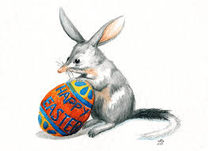

Celebração da Páscoa na Austrália
Na Austrália, a Páscoa coincide com o início do outono, mas as tradições são similares às do Hemisfério Norte. A caça aos ovos de Páscoa é popular, com famílias organizando eventos em parques e jardins, aproveitando o clima ameno.
O coelho da Páscoa é uma figura icônica, e as crianças recebem cestas com chocolates e ovos. Eventos comunitários, como feiras e desfiles, ocorrem em cidades como Sydney, combinando religião e diversão secular.
Devido à diversidade cultural, a Páscoa australiana incorpora influências de imigrantes, mas mantém o foco na renovação e na família. Igrejas realizam serviços especiais, e é comum a troca de presentes e refeições festivas.


